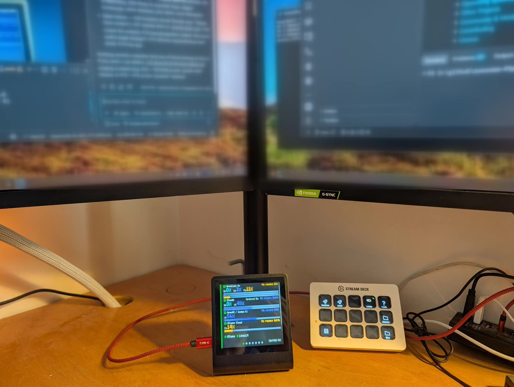
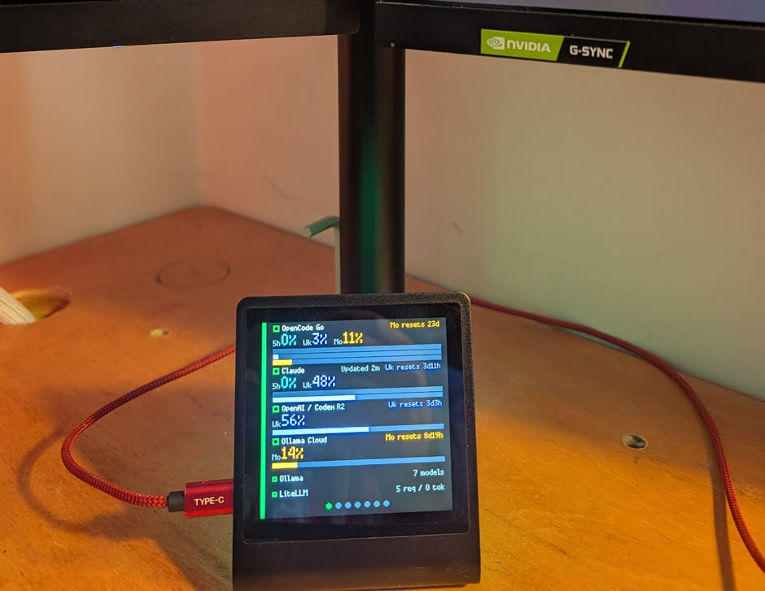

Know your limits
See usage across multiple AI subscriptions, with the provider's actual quota periods and reset times.
Open-source AI usage display
Monitor AI usage, subscription limits, reset times, and service health across your accounts—all at a glance on a dedicated display.
No windows. No screen clutter. Just the information you need.
Free and open source Self-hosted For Pimoroni Presto

SEE WHAT MATTERS
One glance tells you how much room you have left, when a limit resets, and whether your local AI services are healthy.
See usage across multiple AI subscriptions, with the provider's actual quota periods and reset times.
No guessing which window you're looking at. Track countdowns and remaining allowance at a glance.
Check local models, gateway activity, alerts, and stale readings without opening another monitoring tab.


Missing or old data is labeled honestly, never presented as a confident zero
A BETTER PLACE FOR YOUR STATS
Keep coding, creating, and working without giving up part of your desktop. Presto AI Dash stays in sight on its own little screen.

TRY BEFORE YOU INSTALL
The interactive demo runs the actual Presto app interface with clearly marked sample data. Explore the screens and controls before buying hardware or configuring an account.
Launch the interactive demoNo Presto, provider credentials, or installation needed for the demo.


MEET THE HARDWARE
A little screen with a big job.
Presto is a compact, programmable desktop touchscreen. With AI Dash, it becomes a dedicated home for your AI subscriptions, usage limits, and service health.
The standard Presto device is sufficient; the Starter Kit's extra sensors are not required. Presto AI Dash is an independent project, not made or endorsed by Pimoroni.
SIMPLE BY DESIGN
Presto is the eyes of the system. A lightweight collector running on a separate computer or server does the monitoring.
Cloud subscriptions and local AI tools you choose to connect.
Runs on your computer or server, reads usage data, and keeps provider credentials there.
Shows fresh readings, alerts, and status at a glance.
CONNECT WHAT YOU USE
Choose just the sources you use. Each one has a guide explaining its metrics, collection method, and limitations.
READY WHEN YOU ARE
Start with the browser demo, or set up the collector and connect your Presto. Every integration is optional.
Built for Pimoroni Presto today. Exploring other dedicated displays for the future.